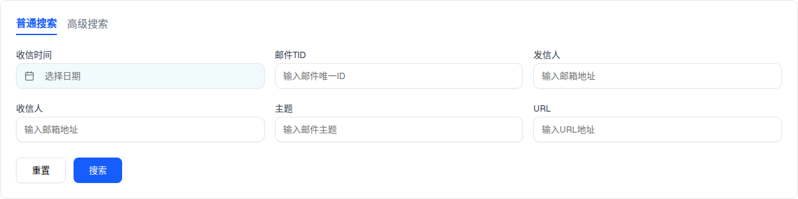

2.1 搜索区（普通搜索 / 高级搜索 双 Tab）
点「普通搜索」/「高级搜索」切换 Tab 态（注意：两态字段完全相同，仅 Tab 高亮样式变化 —— 与 demo 实测一致）

| # | 筛选项 | 类型 | 占位符 / 取值 | 默认 | demo 实测 |
|---|---|---|---|---|---|
| — | 普通搜索 / 高级搜索 Tab | text button ×2 | 激活态蓝色下划线 | 普通搜索 | 切换后字段完全相同（两态节点数均 32），高级搜索无任何额外字段 |
| 1 | 收信时间 | LocalizedDateInput | 「选择日期」→ 日历弹层（实测渲染当月日历） | 空 | 不参与过滤 |
| 2 | 邮件TID | 文本 | 请输入邮件唯一标识 | 空 | 不参与过滤；非受控组件 |
| 3 | 发件人 | 文本 | 请输入邮箱地址 | 空 | 同上 |
| 4 | 收件人 | 文本 | 请输入邮箱地址 | 空 | 同上 |
| 5 | 主题 | 文本 | 输入邮件主题 | 空 | 同上 |
| 6 | URL | 文本 | 输入URL地址 | 空 | 同上 |
| — | 重置 | outline 按钮 | — | — | 只清「收信时间」（其余 5 个输入框非受控，handleReset 无法清空） |
| — | 搜索 | 蓝色主按钮 | — | — | onSearch 是空函数 () => {}，点击无任何效果 |
DOM 树比对结果
| 比对项 | demo 实际 DOM | 提取的 HTML | 是否一致 |
|---|---|---|---|
| 根节点 | div.bg-white.rounded-lg.border.border-gray-200.p-6.mx-4.my-4 | 同 | 一致 |
| 普通搜索态节点数 | 32 | 32 | 一致 |
| 高级搜索态节点数 | 32（仅两个 Tab 按钮 class 互换） | 32 | 一致 |
| 筛选项 | 6（3 列 ×2 行网格） | 6 | 一致 |
| 日期弹层 | 点击「选择日期」渲染日历（100 节点，radix popper portal） | 预览为静态按钮，弹层未嵌入 | portal 弹层不在组件子树内，以事实表记录 |
{kind=link}
{kind=link}